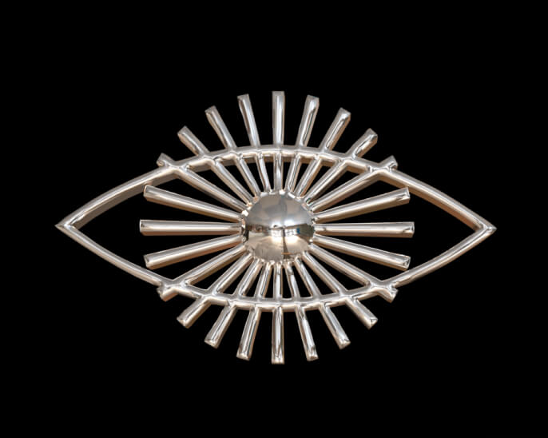
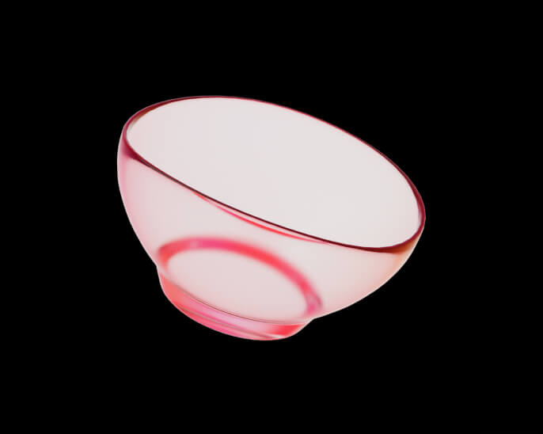

Спутник V
Мне стало скучно на выходных и я решил попробовать себя в триДэ сфере. Мне очень понравилось работать с объектом, но мой комп почти взорвался и настроение, в процессе разработки менялось очень стремительно. Покатался на качельках, так сказать)
Катинки процесса
Я не оригинальный! Почти вся сцена сделана по гайду. Однако я рад, что смог закончиться начатое, хотя процесс создания физики, был очень сложным. Мак оказался не очень производительным.



До спутника
До этого я делал по большей части такие картинки, а непосредственно моделингом не занимался (почти). Но! Безумно доволен за этот экспириенс.
